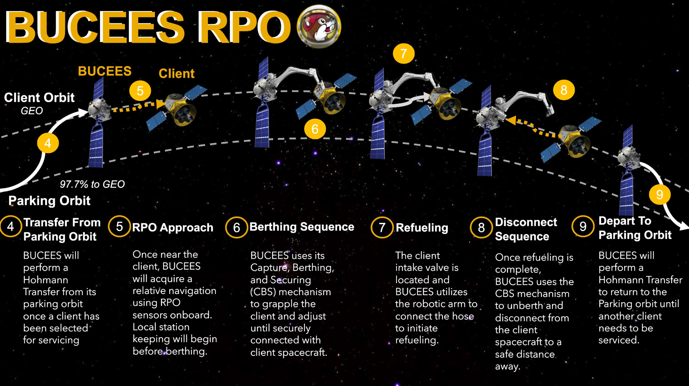
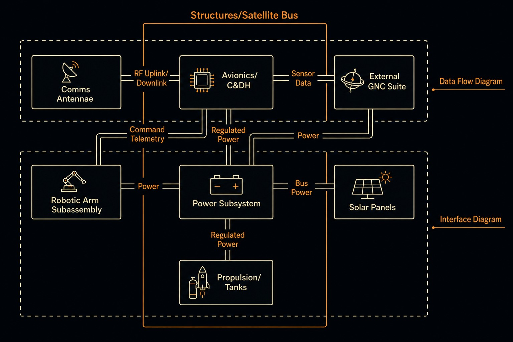
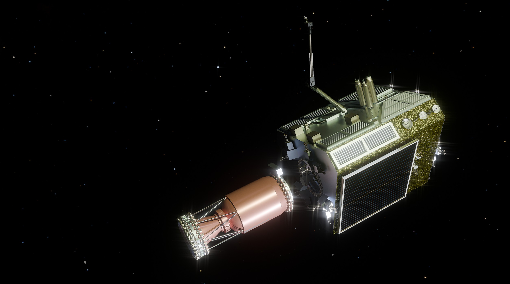

01 · Brief
Turning a GEO refueling mission into a traceable spacecraft architecture.
This senior design project developed BUCEES, an autonomous on-orbit servicing spacecraft concept for extending the life of GEO client satellites. The mission was framed around approaching a client spacecraft, performing proximity operations, establishing a servicing interface, and transferring propellant safely enough to make life extension economically useful.
The project went beyond a single subsystem design. It required connecting the business case, client selection, spacecraft architecture, subsystem sizing, operational modes, risk posture, interfaces, and verification logic into one coherent mission concept.

02 · Problem
GEO servicing is a coupled mission, controls, interfaces, and economics problem.
A servicing spacecraft has to do more than reach GEO. It must safely operate near a high-value client satellite, control relative motion, manage plume and collision risk, align to a servicing interface, transfer propellant, and recover from off-nominal conditions without endangering the client vehicle.
That made the design a systems engineering problem. Sensing choices affected GNC behavior, GNC behavior affected docking and refueling operations, refueling requirements affected mass and propulsion sizing, and every subsystem had to support a clear mission timeline and set of operational modes.
03 · Approach
Breaking the mission into traceable phases, functions, and requirements.
- Defined mission phases for launch and transfer, GEO operations, rendezvous, proximity operations, servicing, eclipse, and contingency behavior.
- Translated mission objectives into system-level requirements and lower-level subsystem considerations.
- Supported interface definition across structures, refueling, GNC, communications, power, and operations.
- Worked through operational mode logic to identify which subsystems were active, partially active, or inactive during each phase.
- Connected GNC needs to relative navigation, sensor usage, attitude control, keep-out zones, and close approach behavior.
- Used trade studies to compare design options and keep the final architecture tied to mission priorities.

04 · Systems Role
My main contribution was keeping the design connected across disciplines.
As Project Systems Engineer Lead, I focused on keeping the design traceable. I helped organize the mission around clear objectives, assumptions, requirements, constraints, interfaces, verification methods, and subsystem responsibilities.
I also supported the GNC side of the mission by helping define how rendezvous and proximity operations fit into the larger servicing sequence. That included thinking through relative navigation, sensing needs, approach geometry, attitude control, and how close-range operations constrained the rest of the spacecraft.
The central challenge was making every design choice traceable back to the mission objective: safely extending the useful life of client satellites in GEO through autonomous refueling.
05 · Outputs
What the project produced.
- A complete mission concept for an autonomous GEO servicing spacecraft.
- A system architecture connecting mission operations, subsystem functions, and client satellite interactions.
- Operational mode definitions for nominal, servicing, eclipse, and contingency scenarios.
- Requirements flowdown and traceability artifacts connecting mission objectives to subsystem-level design decisions.
- Trade study outputs supporting architecture, servicing, subsystem, and operational decisions.
- A final technical report, poster, and presentation communicating the mission design and system-level rationale.

06 · Takeaways
What I took away from the project.
This project strengthened my ability to think like a systems engineer. The biggest lesson was that a spacecraft concept only works when mission goals, requirements, interfaces, operational modes, verification plans, and subsystem assumptions all support one another.
It also reinforced how important clear communication is in aerospace design. A strong technical decision is only useful if the assumptions, constraints, and reasoning behind it are clear enough for the rest of the team to use.